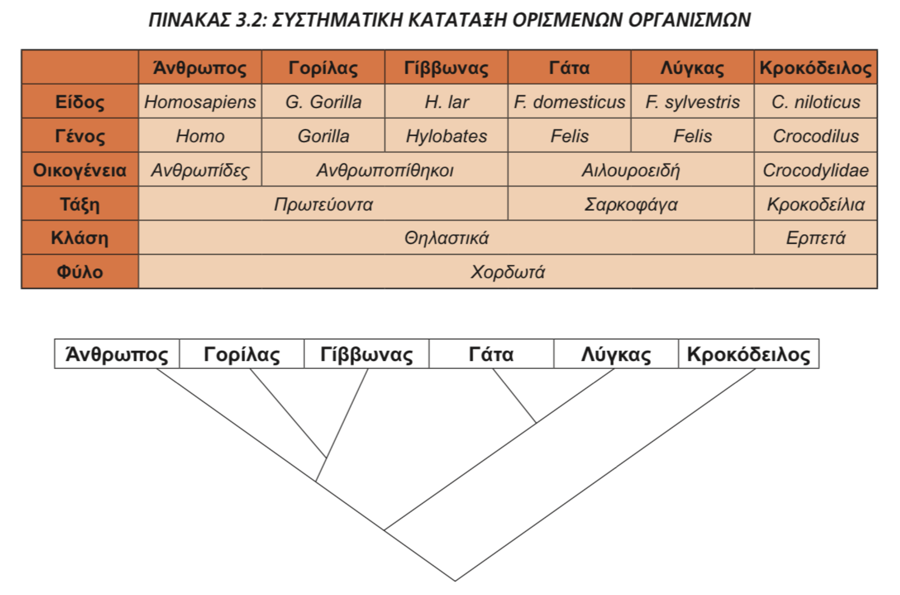

Ερωτήσεις κλειστού τύπου στις θεμελιώδεις έννοιες της Εξέλιξης
Μέρος 1ο: Ερωτήσεις πολλαπλής επιλογής:
I. Ποια είναι η θεμελιώδης μονάδα ταξινόμησης;
II. Πότε δεν ισχύει το μειξιολογικό κριτήριο για τον καθορισμό του είδους;
III. Ποια ταξινομική ομάδα βρίσκεται μεταξύ της Κλάσης και της Οικογένειας;
IV. Παρατηρώντας το φυλογενετικό δέντρο της Εικόνας 3.2 σελ. 122 του σχολικού βιβλίου παρατηρείτε ότι:

V. Σύμφωνα με τη θεωρία του Λαμάρκ οι οργανισμοί εξελίσσονται λόγω μια εσωτερικής δύναμης. Η επίδραση αυτής της δύναμης προσδίδει στους οργανισμούς:
VI. Σύμφωνα με τον Δαρβίνο, οι πληθυσμοί έχουν την τάση να αυξάνονται με γεωμετρική πρόοδο. Αν Ν ο πληθυσμός και Ναρχ η αρχική τιμή του, ποια από τις επόμενες συναρτήσεις αύξησης πληθυσμού συμφωνεί με αυτήν την τάση;
VII. Η Φυσική Επιλογή είναι μια διαδικασία που ευνοεί την επιβίωση των:
VIII. Η Φυσική Επιλογή δρα στο επίπεδο του:
IX. Σύμφωνα με τον Δαρβίνο, η Φυσική Επιλογή αυξάνει τη συχνότητα:
X. Πώς ονομάζονται τα όργανα που βρίσκονται σε διαφορετικά είδη οργανισμών, εξυπηρετούν την ίδια λειτουργία, αλλά έχουν διαφορετική κατασκευή και φυλογενετική προέλευση;